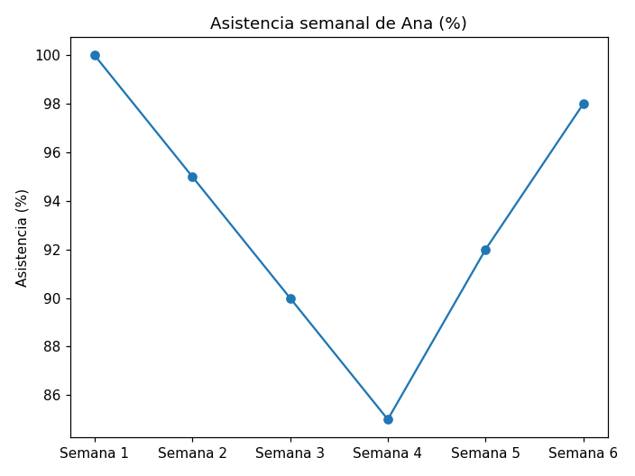
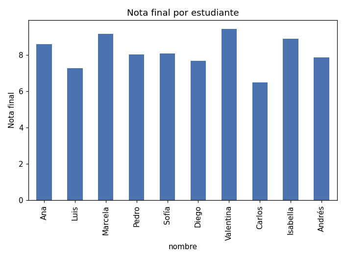
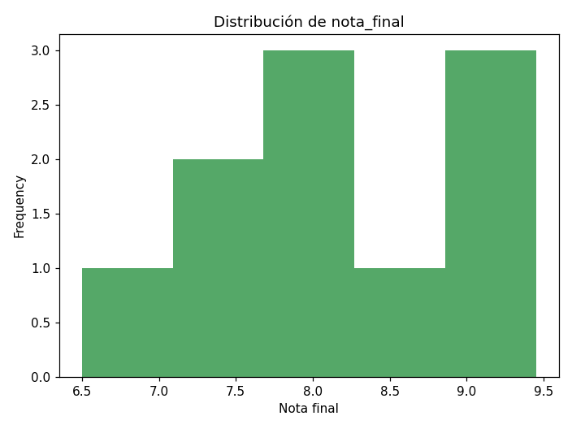
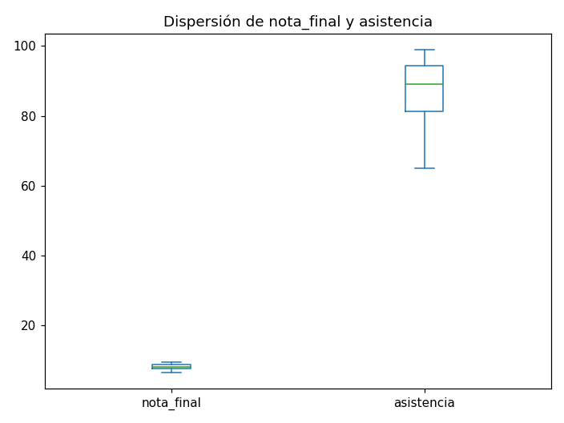
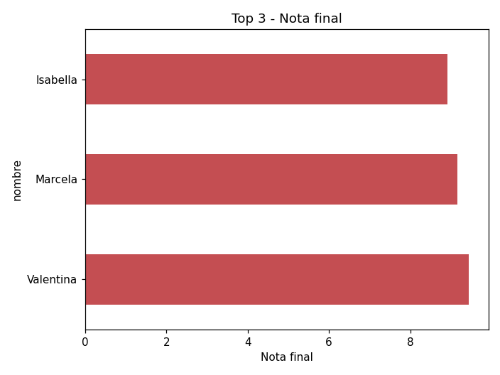
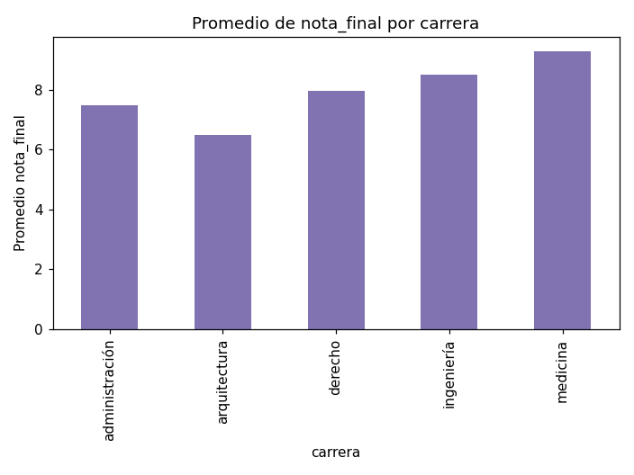

Escuela Superior Politécnica del Litoral
No se evalúa en el examen, pero es clave para presentar resultados.
.plot(): Directo desde PandasPandas usa por debajo matplotlib, pero evita escribir la mayoría del código de bajo nivel. Con .plot() sobre una Series o un DataFrame ya tienes un gráfico razonable.
import pandas as pd
import matplotlib.pyplot as plt
df = pd.read_csv('estudiantes_analizado.csv')
# kind: 'line', 'bar', 'barh', 'hist', 'box'...asistencia_semanal = pd.Series(
[100, 95, 90, 85, 92, 98],
index=['Semana 1','Semana 2','Semana 3','Semana 4','Semana 5','Semana 6']
)
asistencia_semanal.plot(kind='line', marker='o')
df.set_index('nombre')['nota_final'].plot(kind='bar')
df['nota_final'].plot(kind='hist', bins=5)
df[['nota_final', 'asistencia']].plot(kind='box')
nlargest con .plot()top3 = df.nlargest(3, 'nota_final').set_index('nombre')['nota_final']
top3.plot(kind='barh')
groupby().plot()Encadena directamente una agregación por grupo con .plot(), sin pasos intermedios.
df.groupby('carrera')['nota_final'].mean().plot(kind='bar')
Un solo script que recorre cargar → limpiar → filtrar → agrupar → graficar sobre estudiantes_crudo.csv (el original, sin limpiar):
carrera, renombra nota a calificacion.nota_final (90% calificación + 10% asistencia).asistencia >= 80 y calificacion >= 7.0).nota_final por carrera, ordenado de mayor a menor.Graficar:
nota_final por carrera (groupby().plot()).nota_final de todo el grupo.estudiantes_final.csv.Pista: este ejercicio no introduce ningún método nuevo — es encadenar lo aprendido en 6.2, 6.3, 6.4 y 6.5 en un solo flujo.